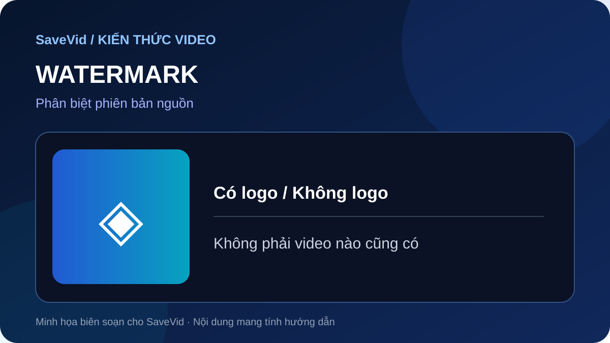

Watermark video là gì và khi nào có bản không logo?

Hiểu dấu nhận diện trên video và vì sao không phải nguồn nào cũng có bản không watermark.
Watermark là gì?
Watermark là dấu nhận diện, chữ hoặc biểu tượng được chèn lên hình ảnh video. Nó có thể giúp ghi nhận nguồn gốc hoặc quyền sở hữu.
Vì sao có nhiều phiên bản?
Một số nguồn hoặc dịch vụ API trả về nhiều luồng, trong đó có thể có bản chứa hoặc không chứa watermark. SaveVid chỉ nên hiển thị lựa chọn có thật.

Không nên cam kết cho mọi video
Khả năng có bản không watermark phụ thuộc nền tảng, nội dung và quyền truy cập. Không thể bảo đảm mọi liên kết đều có lựa chọn này.

Sử dụng có trách nhiệm
Việc loại bỏ dấu nhận diện không làm thay đổi quyền tác giả. Không sử dụng nội dung trái phép hoặc gây nhầm lẫn về nguồn gốc.
Lưu ý: Chỉ tải và sử dụng nội dung khi có quyền phù hợp; khả năng tải phụ thuộc nguồn video và dịch vụ API.